Electrical safety around the world
This page documents the safety features found in modern-day electrical items, how they function, and the dangers posed by older or non-compliant items which lack these features.
Note that, ideally, all of these protections should be present regarardless of the voltage in use inside a specific country: mains voltage, be it 100 or 240 volts, can and will kill you and shouldn't be used as an excuse to be careless in the design of an electrical system.
This is a more general overview of various safety features found around the world; a separate page is present to document the evolution of electrical safety in Italy specifically.
Physical design of plugs and sockets
Dangers present in older items
The plugs shown below are an example of the dangers commonly present in older electrical items:
 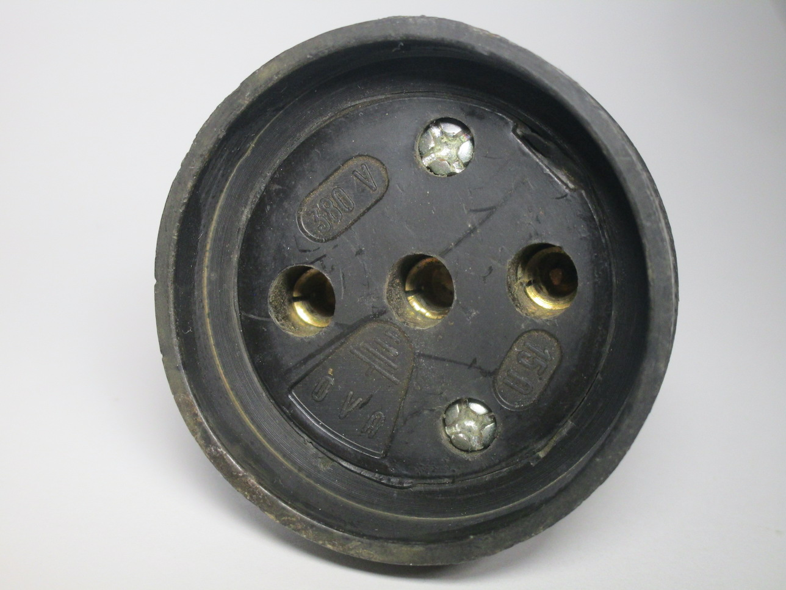
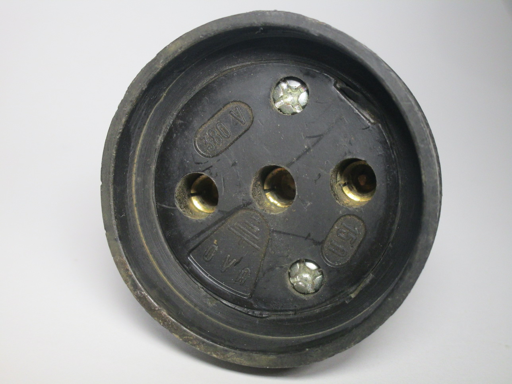
{kind=link}

1, 2. Old socket with exposed metal contacts; the design of these items means that it's trivially easy to touch the live contacts inside, either with a finger or with a metal item, and thus receive a (potentially fatal) electric shock.
3. Partially inserted plug; the pins are already making contact and thus live, but a significant portion of them is still exposed and very easy to touch when inserting a plug, especially if not looking.
Safety shutters on power sockets
Safety shutters as found on power outlets prevent someone from coming in contact with a live connection, even if using some sort of metal object like a screwdriver. They also prevent someone from inserting only one pin inside a socket and thus making the other one live.
The adoption of shutters isn't universal even within Europe, however they'll generally be found in power strips and extension cords, and they're mandatory in a few countries such as Italy. In the US sockets with them have recently started being mandatory on new builds, and they're referred to as TR (tamper-resistant), although they're not common on power strips or extension leads.
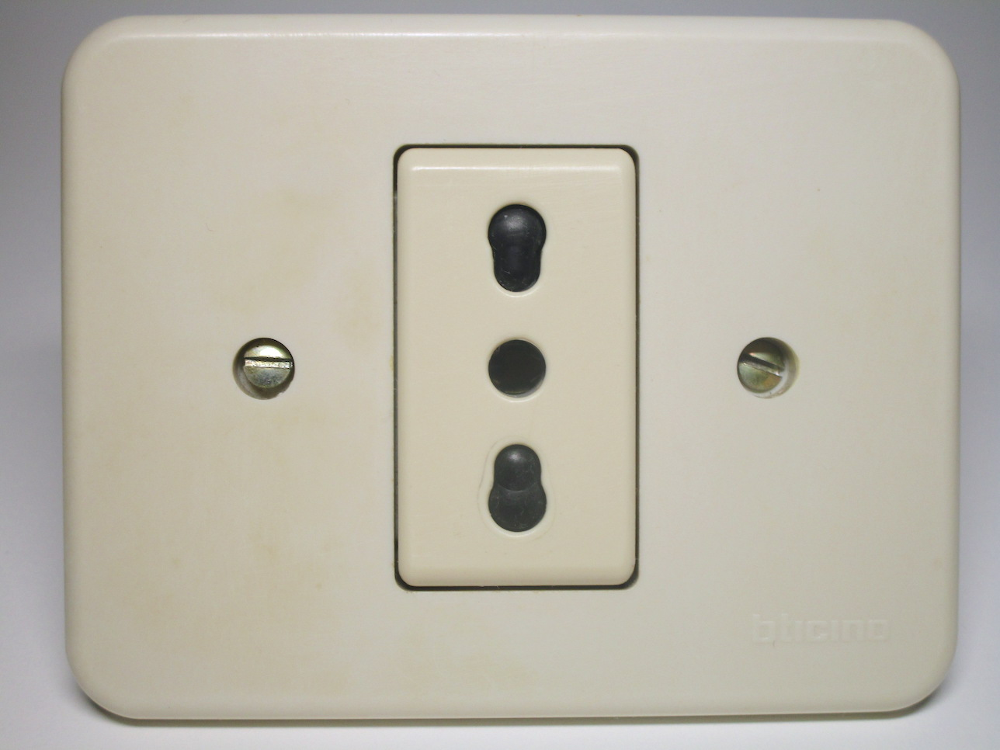 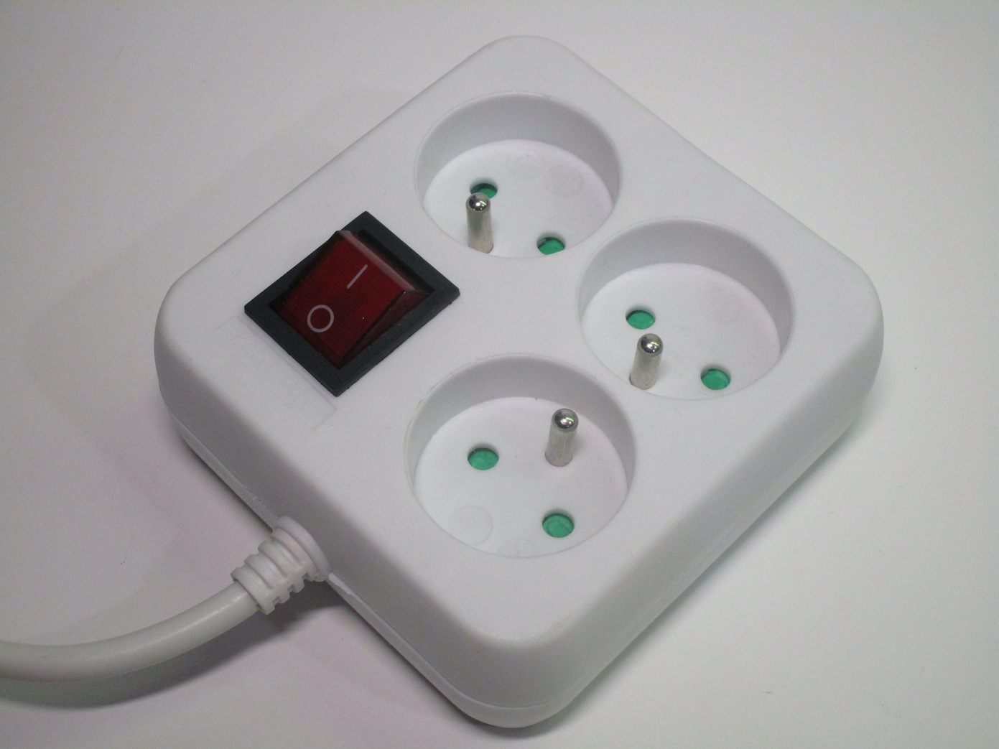 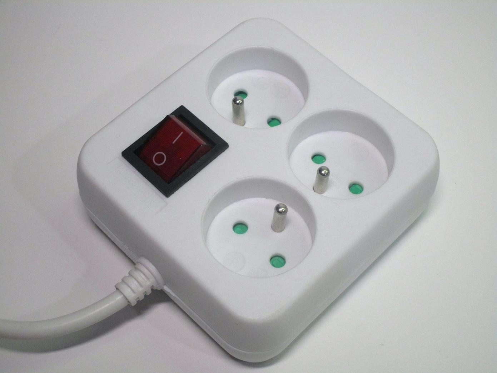{kind=link}
{kind=link}
{kind=link}
Shutter mechanisms can work in various ways, but the key feature found in all of them is that an electric shock
should only be possible if using two objects: one to open the shutters and one to actually reach the live contacts.
Three different types of shutter mechanisms are shown here, each functioning in a slightly different way:
 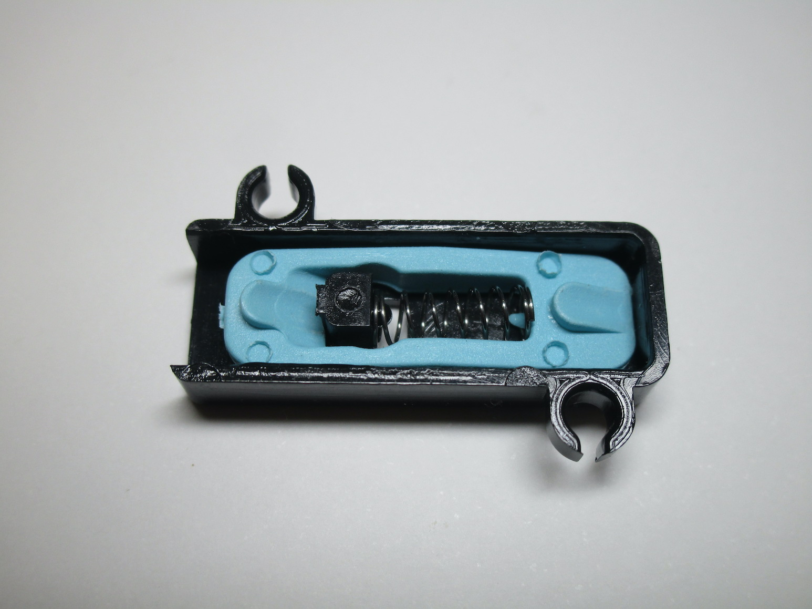
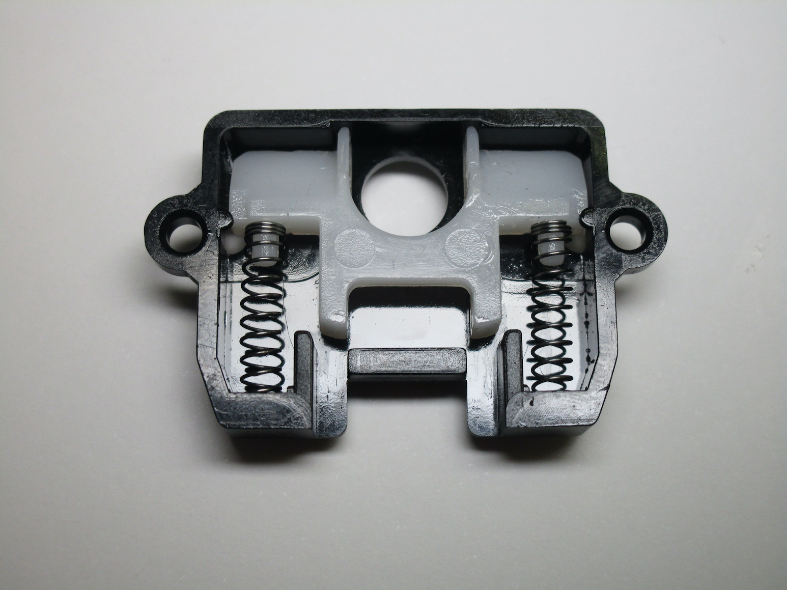
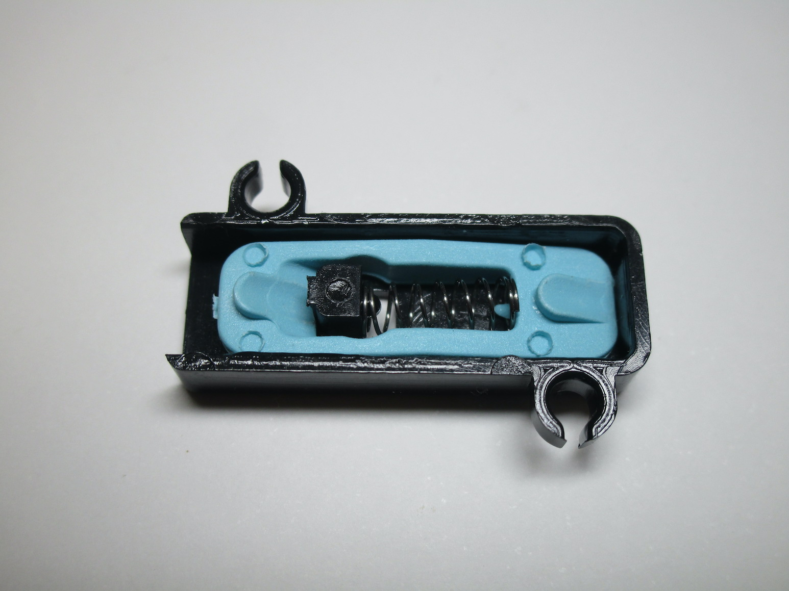
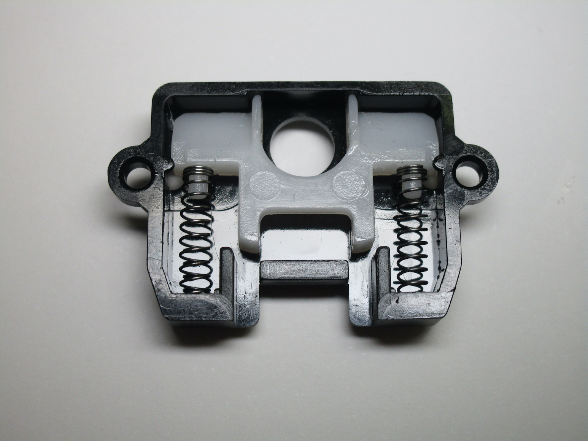
{kind=link}
{kind=link}
The operation mode of all of these is the same: the two pins of the plug will open the shutters if pushed at the same time, while a single object wouldn't be able to make them open due to friction.
The main difference between the three mechanisms is the way the shutters move once a plug is inserted: in the first one they simply rotate to the side, while on the second and third one they slide either to the side or downwards.
A different style of shutter mechanism is in use on certain 3-pin plugs and sockets, namely the UK ones (BS1363), where this is required, and in modern-day BS546 ones, but also on some Australian-style sockets found in China, where those plugs are only used for devices that require an earth connection. With this type of mechanism, the shutters for line and neutral will open by the insertion of the earth pin, which thus has to be slightly longer.
This style of mechanism is in some ways better, as if someone were to get a shock they'd be in contact between line and earth, allowing an RCD to trip. However, it also means that all plugs have to have an earth pin, even if it's not required by the device, which can make the plugs bulky.
Notably, some higher-end British sockets use both styles of mechanism, with the shutters only opening if the earth pin is in place and then by the simultaneous push of both the line and neutral pins.
Sleeved pins or recessed sockets
As seen earlier, with older plugs and sockets it was quite common to have the pins be easy to touch when partially inserted inside a power socket, thus creating a shock hazard (especially if holding the plug with wet hands, such as for a hairdryer). As such, most plug and socket systems around the world have, over time, been improved in order to make it impossible to touch live pins on a plug, by using either sleeved plug pins or recessed sockets.
It should be noted that, in order for either of these systems to be truly effective, plugs and sockets have to be designed for one another; effectively considering the two not as separate items but as an interface. This can be noted on some very old sockets with contacts right up to the surface: with those, even a modern plug with sleeved pins may still leave the pin live when partially inserted, as the socket has contacts too high up compared to modern-day ones.
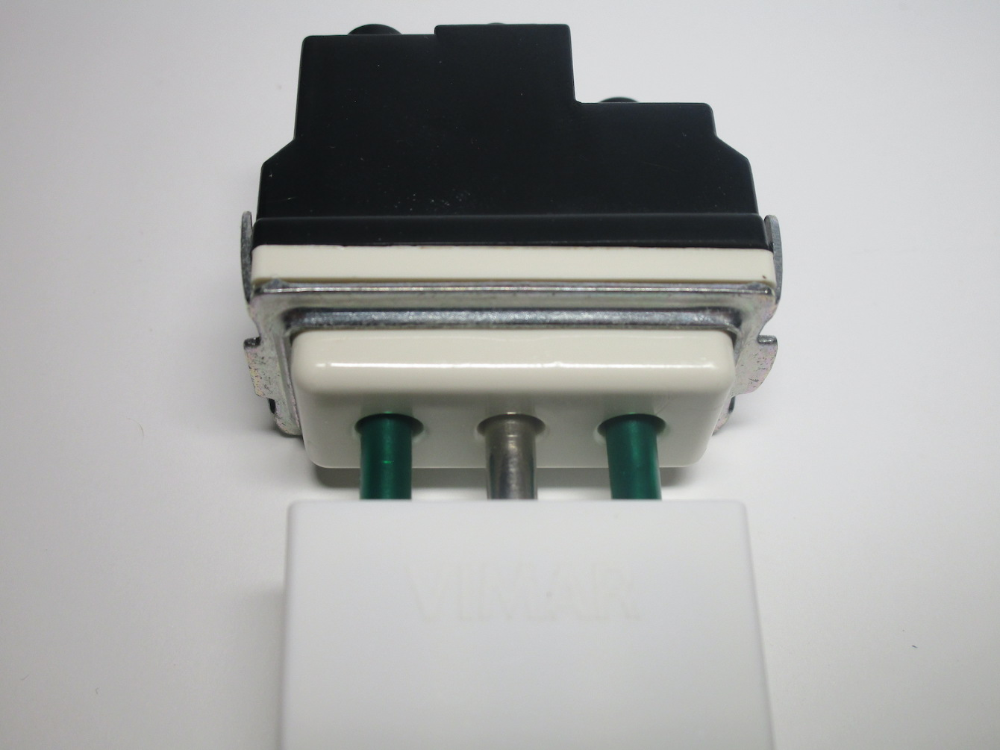 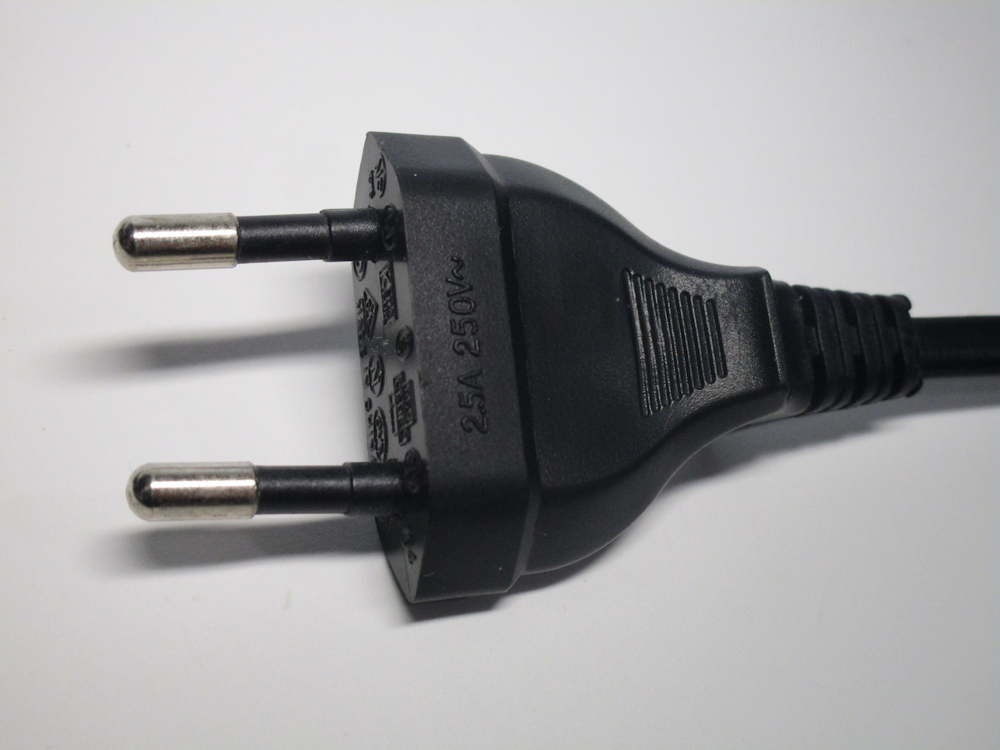 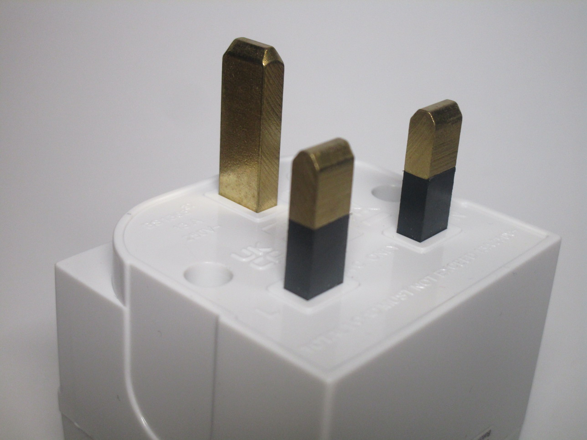{kind=link}
{kind=link}
{kind=link}
On plugs with sleeved pins, the socket remains substantially unchanged while the pins of the plug become partially covered by an insulating material, in such a way that, while making contact with the socket, the only part exposed will always be the sleeved part of the pins.
This system is used on Europlugs and on British (since 1984), Italian, Swiss and Australian plugs, as well as on some Japanese ones (though non-sleeved ones are also commonly used), among others. It should be noted that both on the Swiss and IEC 60906-1 plugs this is combined with recessed sockets in order to provide the most protection.


Recessed sockets, on the other hand, move the problem to the socket end: the socket must have a recess of a certain depth in order to make it impossible to reach the pins while the plug is live. The most well-known examples of this style of sockets are the Schuko and French-style ones.
While this approach offers, in theory, a larger contact area on the pins than on plugs with sleeved pins, in addition to a much more firm connection, its main downside is that it requires the use of the right sockets in order to provide this protection; as such, older (generally, unearthed) sockets and some travel adaptors may allow the plug to connect while leaving part of the live pins exposed.
Circuit design and other features
Protective earth (ground) connection
This important safety feature ensures that all exposed metal components of an appliance are connected to an earth
conductor, which has to be the first connection made when plugged in and the last to be disconnected.
Thus, if the appliance has a fault, like a damaged wire, that causes its chassis to become live, a current
will flow to earth, tripping a fuse or breaker (for high-current faults) or an RCD
(for low-current ones) and interrupt power to the device, thus preventing someone from coming in contact with it
and risking a potentially fatal shock.
Because of its importance, most countries around the world now mandate new circuits to have an earth connection and the use of earthed power sockets, though older installations may still have non-earthed circuits and outlets. In order to enforce this protection, plugs used for earthed appliances often ensure that they cannot physically be connected to such outlets, generally by the use of an earth pin, though notably the Schuko and French-style plugs most commonly used in Europe allow their connection to the older style CEE 7/2 sockets, due to the way earth connections work on these types of plug.
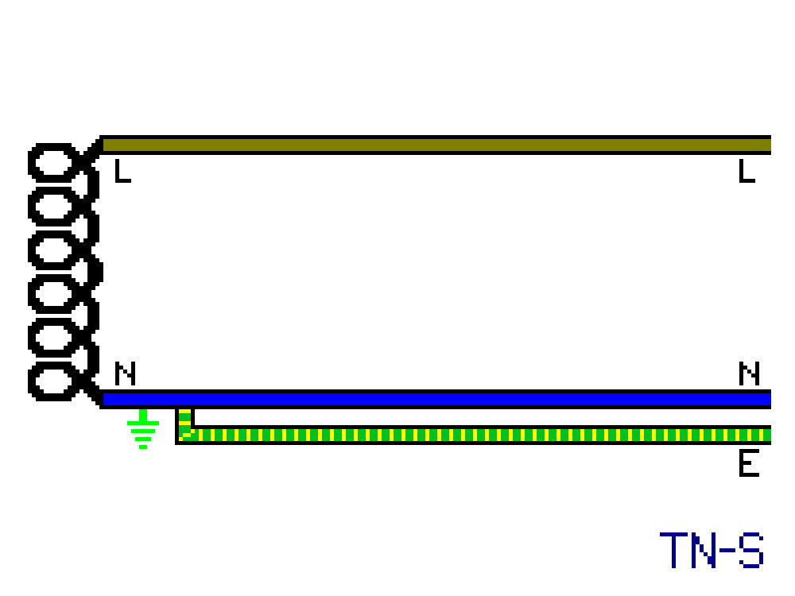 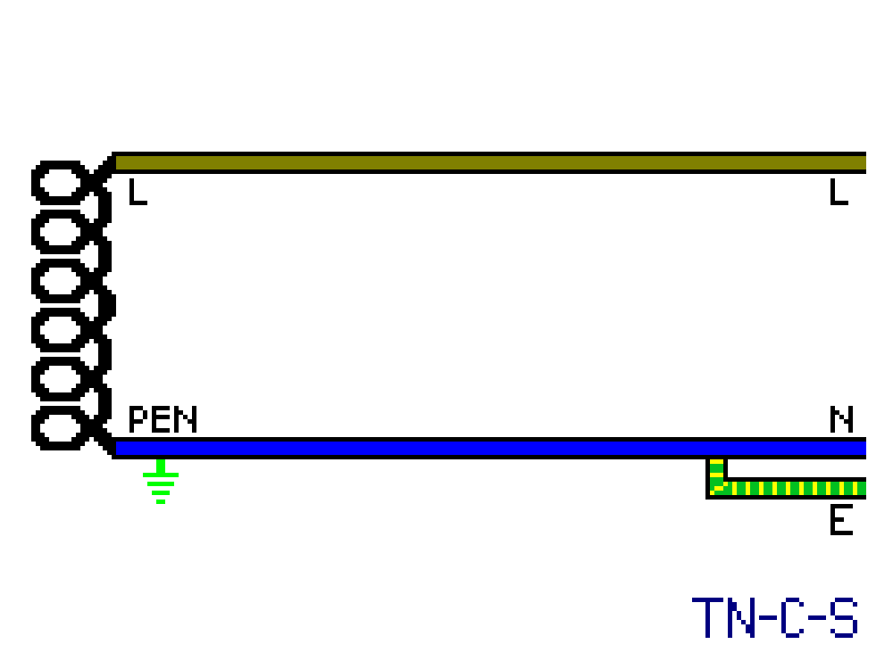 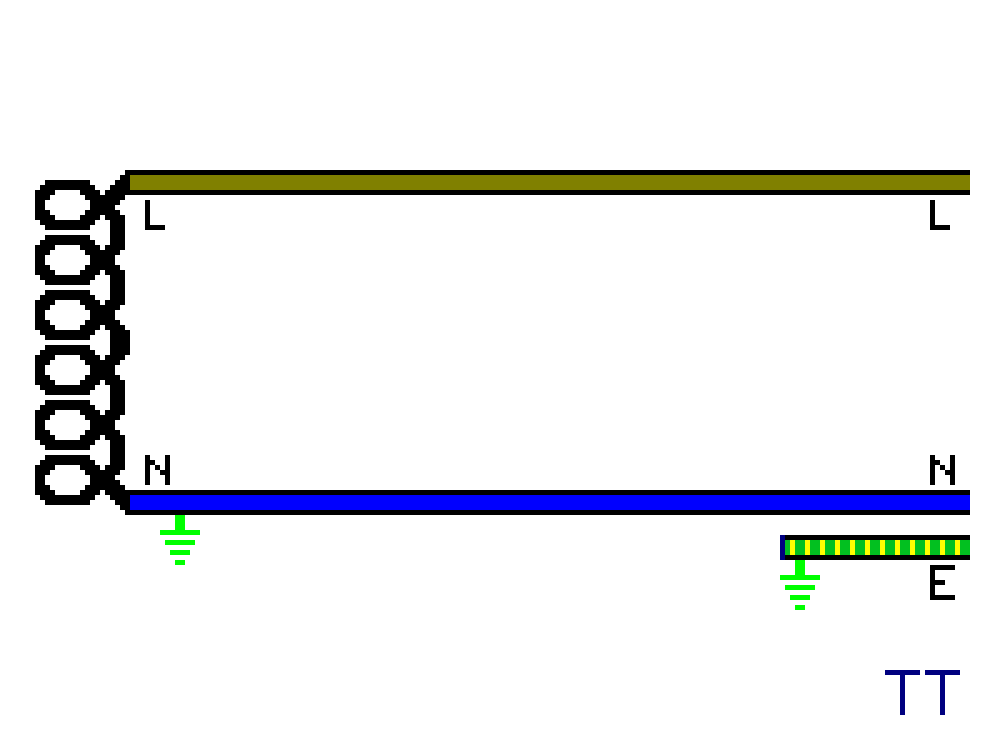{kind=link}
{kind=link}
{kind=link}
It should also be noted that the way earthing systems work can vary between different countries and electrical codes, with some places having different types of system even within the same country; these systems are generally categorised into TN and TT supplies depending on the source of the earth connection, with TN ones being sub-divided into TN-S, TN-C and TN-C-S.
TN supplies are quite common in Europe and in North America; in this system there is some form of physical
connection between the customer's protective earth (PE) conductor and the neutral point of the transformer.
On TN-S ones this is in the form of a separate wire (expensive but very safe); on TN-C-S ones (the only style
in use in the US and Canada), on the other hand, there is a combined neutral and earth wire (PEN) which is then
divided at a certain point.
The main risk with these is if the PEN is broken for any reason; in that case the voltage in the earth conductor
will rise, potentially to quite dangerous levels.
TT supplies on the other hand rely on an earth rod to be installed; this system used to be less preferrable before RCDs became commonplace due to its high impedance, as a fault between line and earth may not necessarily have a high enough current to trip a fuse or breaker immediately. However, thanks to modern RCD protection, they have become much more attractive due to producing less interference and being immune to the risk of a broken PEN TN-C-S supplies have. This is the type of system in use in Italy, though it's also common in some other countries, especially for rural installations.
Double insulation
Double insulated appliances offer protection against a single failure without relying on an earth connection, by using reinforced protective insulation (such as two layers of plastic). This is as opposed to Class 0 appliances, which offer no protection even after a singular failure; such devices have long since been made illegal in 230V countries, though they may still be found on older items, most commonly with incandescent holiday light string sets.
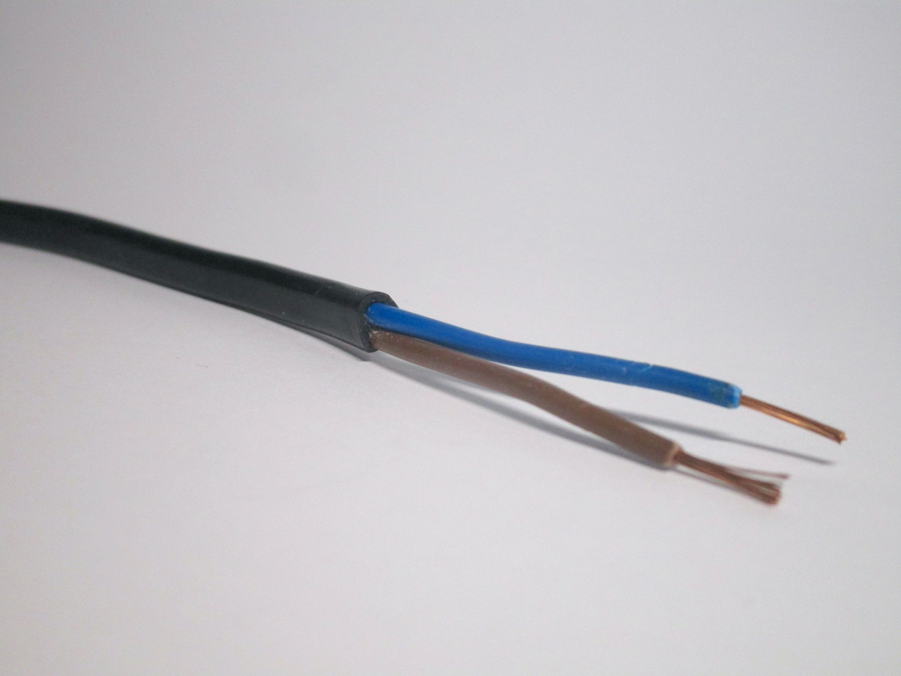 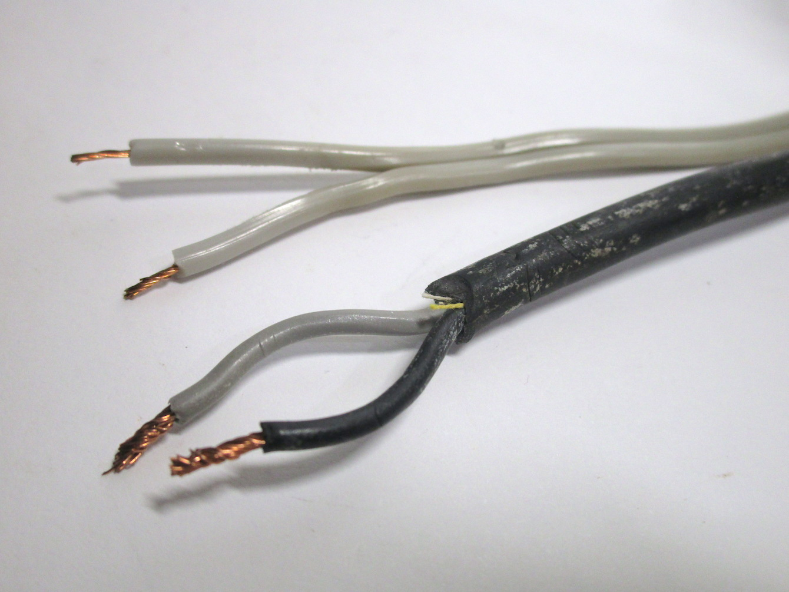{kind=link}
{kind=link}
In particular, one good example of this practice is in the double insulated power cords, which are the only type in use in Europe nowadays. With these, the application of this principle is very clear: in addition to the standard insulation around the wires an additional protective layer of plastic is present around them, so a simple cut to the cable is unlikely to reveal the live conductors.
This style of cable is unfortunately still very common on 120V countries, however, and generally used primarily on non-earthed appliances.
Additional protection
As the name implies, these devices offer additional safety features in order to protect a user, but shouldn't be relied upon to be the only form of protection. With RCDs, where this term is more commonly used, this is because, while they generally protect someone from electocution, they still require a person to receive a shock in the first place.
Residual Current Device (RCD) / Ground Fault Circuit Interrupter (GFCI)
These devices monitor the current flowing in the line and neutral connections; normally, their sum should be zero, however in case of a fault, such as someone touching a wire, the current may take a different return path. This will then be detected by the RCD and, if above a certain limit (typically 30mA), will disconnect immediately in order to stop a potentially fatal electric shock.
RCDs have made a significant contribution to the safety of electrical installations over the last few decades, and as such are required in new installations on a large number of countries worldwide.
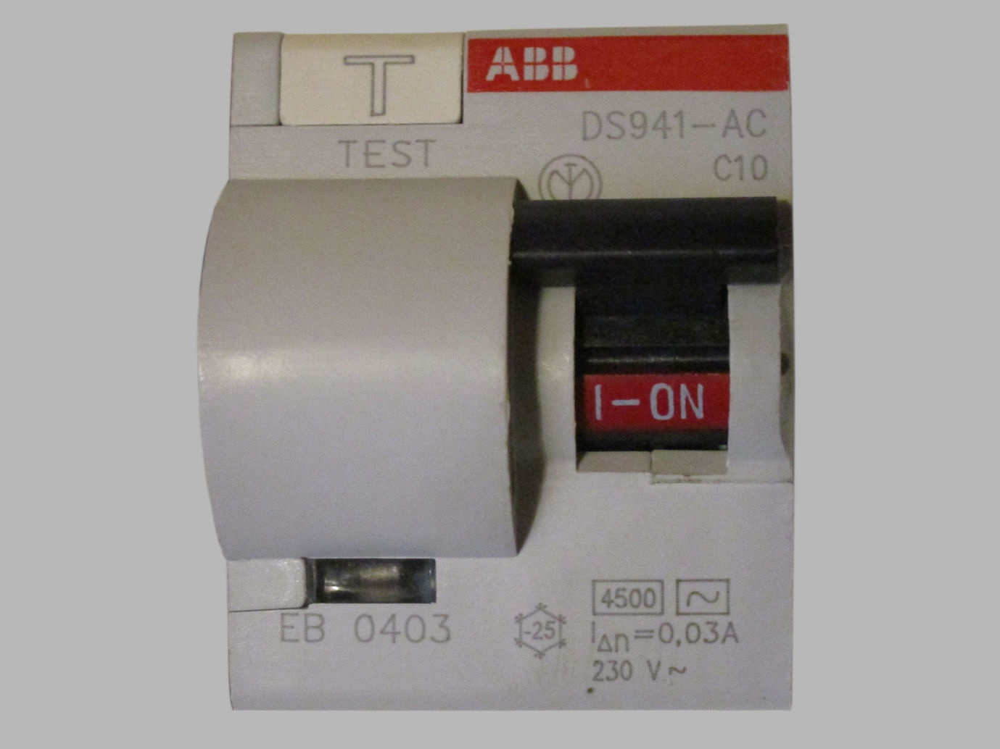{kind=link}
 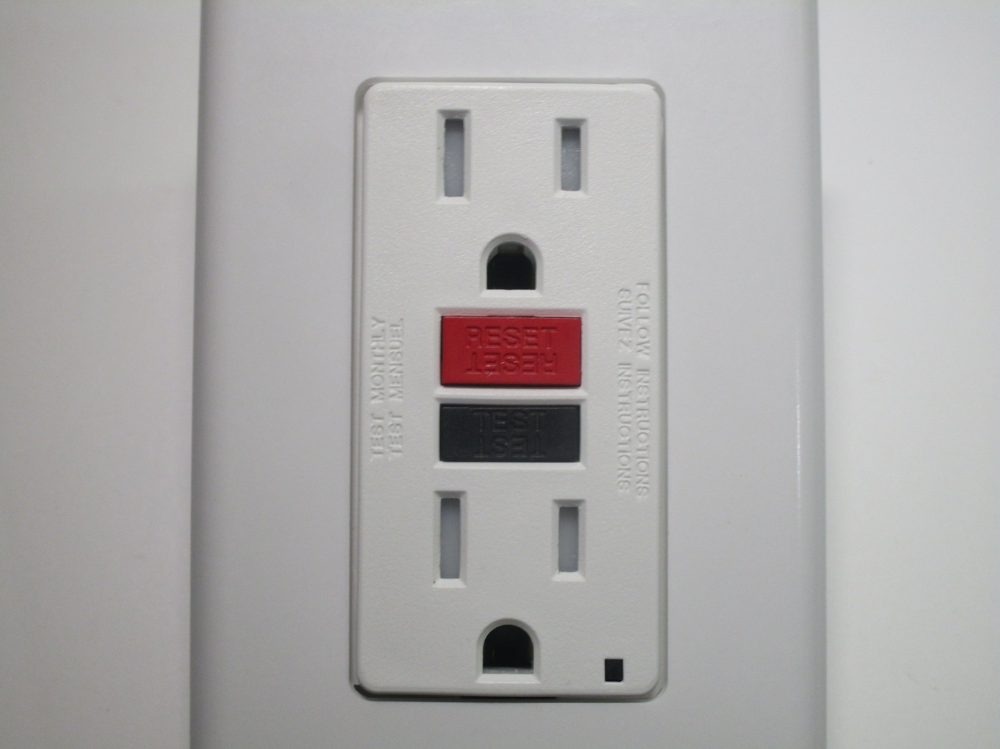
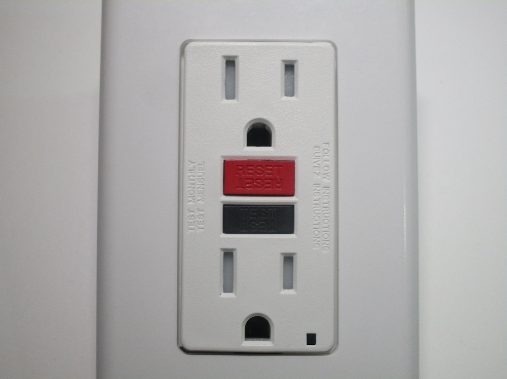
{kind=link}
While their theory of operation is the same, there are some significant differences between European RCDs and American GFCIs: the former are typically installed in a breaker panel in order to protect (either individual, or multiple) circuits; as such, it is possible to protect an entire installation for a relatively low price to the customer. They're available in either "pure" (RCD-only) devices or RCBOs, which also incorporate a breaker; it's also common for these devices to interrupt the neutral conductor.
American GFCIs on the other hand are generally found in sockets (something also available in Europe but less commonly
used), which protect the socket on the device itself and any other connected to the load terminals.
GFCI breakers are also avabilable, the equivalent to a European RCBO, though they're less commonly used.
Notably, GFCIs trip at 5mA, compared to the 30mA of RCDs in Europe; however, they're much less commonly used,
generally being installed only in wet areas such as kitchens and bathrooms.
Potential hazards
Dangerous adaptors
Poorly made travel adaptors can pose a significant danger due to the poor connection at the socket end; this can lead to high resistance connections to be made which can then melt the adaptor, creating a fire risk.
 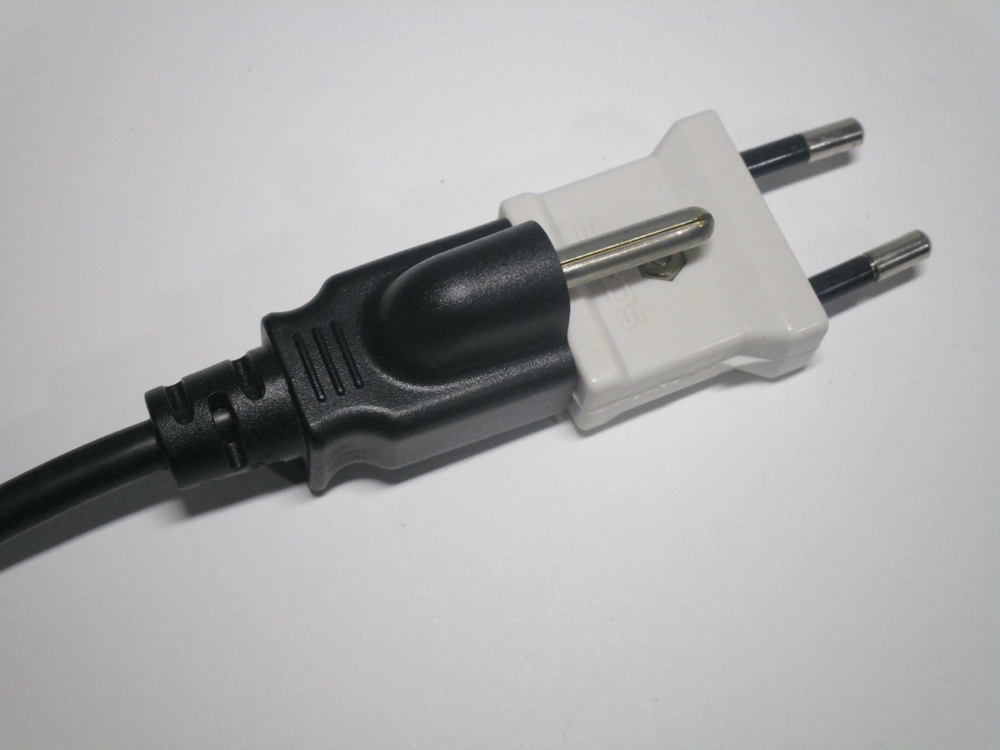
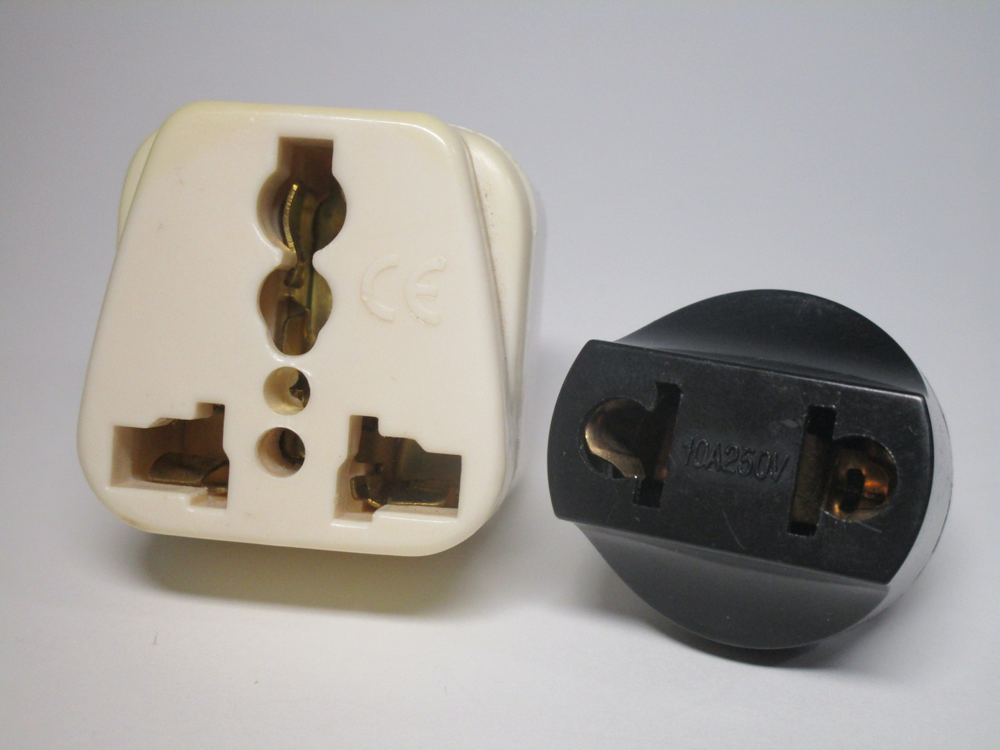
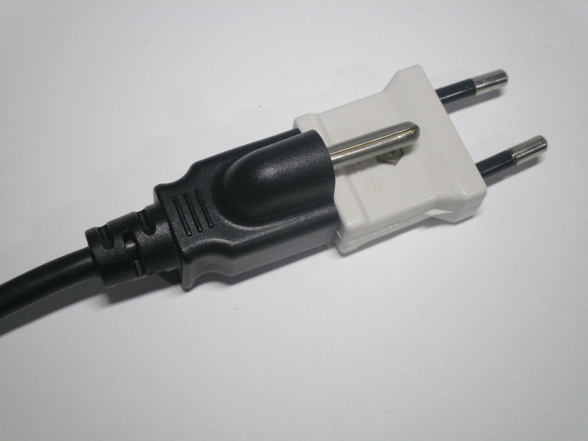
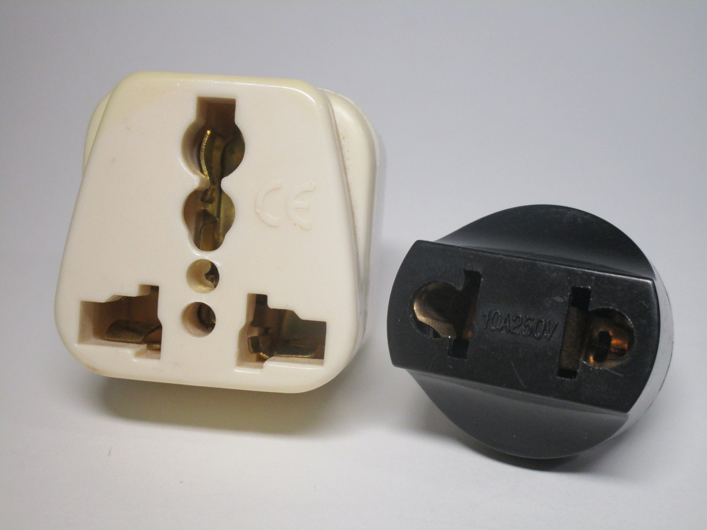
{kind=link}
{kind=link}
Additonally, most of these adaptors don't offer any safety shutters, which often also means it is possible to insert a plug with one pin only, leaving the other one live and very easy to touch. It's also fairly common for adaptors to bypass the earth connection on the socket, which can create safety hazards when earthed devices are connected.